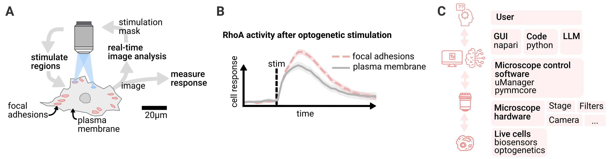

Automation of optogenetic targeting#
Lucien Hinderling, Benjamin Grädel, Alex Landolt, Maciej Dobrzinsky, Olivier Pertz, University of Bern, Institute of Cell Biology
Specific Focus and scientific questions asked#
The cytoskeleton drives key cellular functions like morphology, polarity and migration, and is regulated by Rho GTPases that act as molecular switches. Traditionally, the Rho GTPases Rac1, Cdc42, and RhoA were thought to independently control actin polymerization, filopodia formation, and contractility in a top-down manner. Recent biosensor studies have revealed that these GTPases are however dynamically coordinated at the subcellular scale, interacting in complex signaling networks at the timescale of seconds. Feedback from cytoskeletal structures directly influences Rho GTPase activity, creating an intricate, reciprocal relationship between signaling and structure.
Optogenetics allows precise spatio-temporal control of Rho GTPase signaling, enabling direct causal testing of this feedback regulation, by shining light on specific cellular regions and measuring the signaling response. Applying optogenetic stimulation in live cells requires constant manual adjustment of the illuminated regions to follow cellular movements. This approach is thus time-intensive and limited in throughput, posing a challenge for studying cytoskeletal signaling in dynamic contexts.
Smart microscopy addresses these limitations by integrating optogenetics with automated imaging systems that use digital mirror devices (DMDs) or galvo mirrors to dynamically update illumination patterns. Using computer vision, these microscopes autonomously detect cytoskeletal structures and respond to cellular behavior. Adapting light stimulation patterns in real time, this approach allows to systematically probe local heterogeneity in cellular signal processing (Fig. 1A).

Fig. 1: Smart microscopy for automated subcellular targeting: A) Cytoskeletal structures are detected with computer vision and targeted with optogenetic stimulation. Local response of the cells is measured. B) Cell response depends on stimulation location, highlighting subcellular heterogeneity in cellular signal processing. C) Overview of architecture. The user interfaces with the microscope control software via GUI, code or by using an LLM. The microscope controls live cells using optogenetics and reads their response using fluorescent biosensors.
Key findings and innovations#
In a recent study exploring feedback regulation between Rho and a cytoskeletal structure called focal adhesions, we demonstrated the capability of this approach [Heydasch et al., 2023]. Using an optogenetic actuator- biosensor circuit to activate Rho and measure Rho activity, we investigated DLC1, a regulator of Rho that localizes to focal adhesions.
By automatically detecting focal adhesions, we systematically analyzed cellular responses to Rho activation, probing thousands of subcellular regions across hundreds of cells in a fully automated manner (Fig. 1B). With this high-throughput approach, we found that DLC1 maintains force homeostasis at focal adhesions by locally increasing Rho activity in response to mechanical stress. With the manual low-throughput methods we used initially, the regulatory dynamics were masked by cell-to-cell variability.
Together, optogenetics and smart microscopy offer a scalable, high-precision method to dissect complex feedback-driven signaling networks, providing novel insights into cytoskeletal regulation. By swapping out the optogenetic actuator and biosensor circuit, this approach can be adapted to study spatio-temporal signaling dynamics across various domains of cell biology.
Methodology and implementation details#
To control and automate the microscope we built an open-source software stack (Fig. 1C). Our primary challenge was integrating control of all hardware devices (camera, stage, light source, DMD) within a single software environment. We build upon Micro-Manager, which provides drivers for over 250 devices. For feedback logic and data analysis, we chose Python due to its rich libraries for computer vision and signal processing. Python’s accessibility and feature-rich ecosystem make it an ideal choice. We bridge Micro-Manager’s C++ device drivers to Python using PyMMCore.
Our smart microscopy experiments rely on complex image processing pipelines that generate diverse outputs (segmentation masks, point detections, tracks, biosensor quantification). These pipelines have to be adapted to cellular variability: cell appearance, biosensors, and morphology differ from experiment to experiment based on factors like drug treatment. Since we need real-time image processing during experiments, there is no time for extensive model training or post-acquisition parameter tuning. To address this, we built Convpaint, an interactive pixel classifier that can be trained on a single sample image from that experiment. We use Napari, a multimodal image viewer for Python, to preview the image processing results, facilitating on-the-fly parameter tuning before starting the experiment.
Napari also allows us to create custom microscope control widgets (e.g., for previewing image analysis, calibrating the DMD, setting experimental parameters). This setup enables even complex smart microscopy experiments to be run without coding. While commercial microscope control software provides extensive GUIs for standardized experiments, custom experiments usually require scripting. With Napari, we can build GUIs to streamline accessibility even for highly customized experiments and technically complex setups. Recently a plugin has been developed (napari-micromanager) that provides a GUI for all (non-smart) microscope operations.
Each experiment is documented in a Jupyter notebook, detailing algorithms and experiment variables like the stimulation logic. This practically provides automated documentation. Re-running an experiment is as simple as re-running the notebook.
To maximize experimental throughput, we use a main thread for scheduling hardware control events (move stage, acquire image, stimulate region), while image processing runs on separate threads for different fields of view.
All image data and processing results are continuously stored, allowing inspection at any time during the experiment and faster iteration time when troubleshooting. From the extracted data, we also automatically generate quality control plots (segmentation overlays, tracking statistics). At the end of each experiment, plots can be created from the microscope output data with no further processing.
Contributions to Interoperability#
Micro-Manager not only offers extensive device driver support (see list of supported devices), making our workflow compatible with a wide range of custom microscope setups globally, but it also provides standardized interfaces for the core device types in modern microscopy. This framework ensures that our code remains hardware-agnostic; for instance, any DMD can be seamlessly integrated as long as it is implemented as a genericSLM device in Micro-Manager (we currently use the Andor Mosaic 3 and Mightex Polygon 1000). We define acquisition events in an abstract format using useq-schema, which could theoretically be adapted for use with other microscope control software.
Limitations#
These abstractions are feasible due to a growing community around Micro-Manager. Sustained development and critical mass forming around its ecosystem encouraged many hardware vendors to make their devices compatible with the software. However, the current abstractions are designed for classical microscope automation without feedback components. All smart features in our pipeline remain outside any established standards. Currently, we rely on custom data structures to store results. We plan to implement OME-Zarr to standardize metadata storage and processing. Although much of our pipeline can be tested in silico, we lack a simulator for photomanipulation. In silico testing is essential for troubleshooting and the implementation of automated testing across our pipelines.
Max Heydasch, Lucien Hinderling, Jakobus van Unen, Maciej Dobrzynski, and Olivier Pertz. Gtpase activating protein dlc1 spatio-temporally regulates rho signaling. eLife, December 2023. URL: http://dx.doi.org/10.7554/eLife.90305.1, doi:10.7554/elife.90305.1.